Authors: Celal Ziftci, Spencer Greene, Ray Liu, Livio Dalloro, Lorenzo Dini · Google, MIT
Published: 2026-10-05 · Category: cs.SE
Citation: arXiv:2610.07289v1 · PDF · abstract page
FlowAgent Achieves 67.2% Repair Accuracy for Real-Time Pre-Submit CI Failures
1. What It Is & Why It Matters
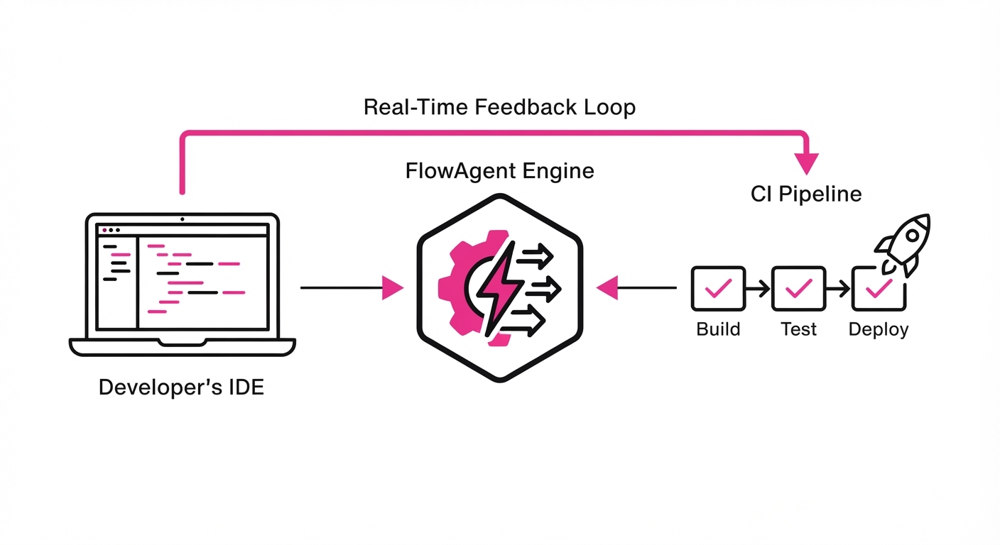
Manual debugging during the pre-submit phase—the critical window between writing code and merging it into a codebase—is a major productivity killer. Developers are frequently forced to context-switch, waiting minutes or even hours for CI pipelines to complete, only to discover a trivial failure. This "stop-and-wait" cycle shatters the "flow state," the psychological state of deep work essential for complex engineering. Existing Automated Program Repair (APR) tools have historically struggled with this; they are often designed for offline, batch-processed analysis, making them too sluggish for active, real-time development loops.
FlowAgent is an agentic framework engineered for Google-scale software development. It integrates directly into developer tools like Critique (code review) and Cider (IDE) to provide near-instant, autonomous, and verifiable fixes for test failures before the code is ever committed.
- The Problem: High-latency repair cycles in CI pipelines disrupt developer flow, increase cognitive load, and delay feature velocity.
- The Core Idea: A ReAct-style agent that balances LLM-driven creative generation with strict pre- and post-execution filters to ensure high-precision, low-latency repairs.
- Headline Result: FlowAgent achieved a 67.18% success rate on manual evaluations of real-world test failures and successfully facilitated 28,554 applied fixes across Google’s massive, monorepo codebase.
🏭 Industry Angle: Engineering managers at large-scale enterprises can use FlowAgent to reduce "developer wait time" in CI/CD, directly translating to higher feature throughput, reduced context-switching fatigue, and lower operational overhead.
2. How It Works
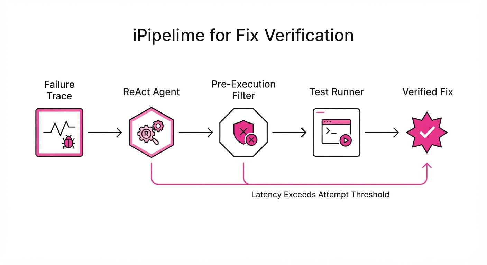
FlowAgent operates as a specialized agentic loop that treats code repair not as an open-ended generative task, but as a constrained search and validation problem.
- ReAct Loop: The agent employs an iterative "Thought-Action-Observation" cycle. It reasons about the failure trace, queries the codebase for dependency context, and iteratively proposes code edits.
- Pre-Execution Filtering: Before invoking expensive CI compute resources, the agent applies heuristic filters to discard "hallucination-prone" suggestions. It checks for basic syntax errors, forbidden API usage, and structural inconsistencies.
- Post-Execution Validation: Proposed patches are executed against the specific failed test suite. Only those that pass the test (and maintain existing code coverage metrics) are surfaced to the developer.
- Latency Guardrails: The system enforces strict timeouts on LLM inference and test execution. If a fix isn't found within a specific latency threshold, the agent aborts to ensure suggestions arrive while the developer is still focused on the task.
- Integration: Embedded directly into the Critique (code review) and Cider (IDE) interfaces to minimize UI friction, ensuring the agent acts as an invisible assistant rather than an intrusive popup.
# Simplified FlowAgent Logic
def repair_loop(failure_trace):
for attempt in range(MAX_ATTEMPTS):
# 1. Generate candidate based on trace
patch = agent.generate_fix(failure_trace)
# 2. Pre-filter: Check syntax and policy compliance
if pre_filter(patch):
# 3. Post-filter: Run against test suite
if test_runner.run(patch).passed():
return patch # Verified fix found
return None3. Core Idea & Key Numbers
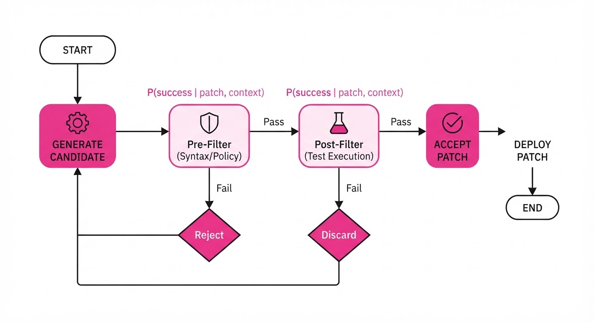
The mechanism relies on optimizing a conditional probability filter: P(success | patch, context). This function is designed to maximize the likelihood that a generated patch will pass the test suite, effectively discarding low-confidence patches before they trigger expensive CI compute cycles.
💡 Intuition: Think of it as a "filter-first" security guard for code. Instead of trying every possible fix generated by the LLM, it uses a lightweight, high-speed model to discard "obviously wrong" patches. This saves the heavy-duty CI validation—which consumes significant compute and time—for the most promising candidates. 🔍 Example: Suppose the LLM generates 10 potential fixes for a failed unit test. The pre-filter performs a static analysis check, finding that 6 of these contain syntax errors or call deprecated internal APIs. By discarding these 6 immediately, the system only sends 4 candidates to the CI runner. This results in a 60% reduction in CI compute overhead and a significantly faster feedback loop for the developer.
4. Analogy
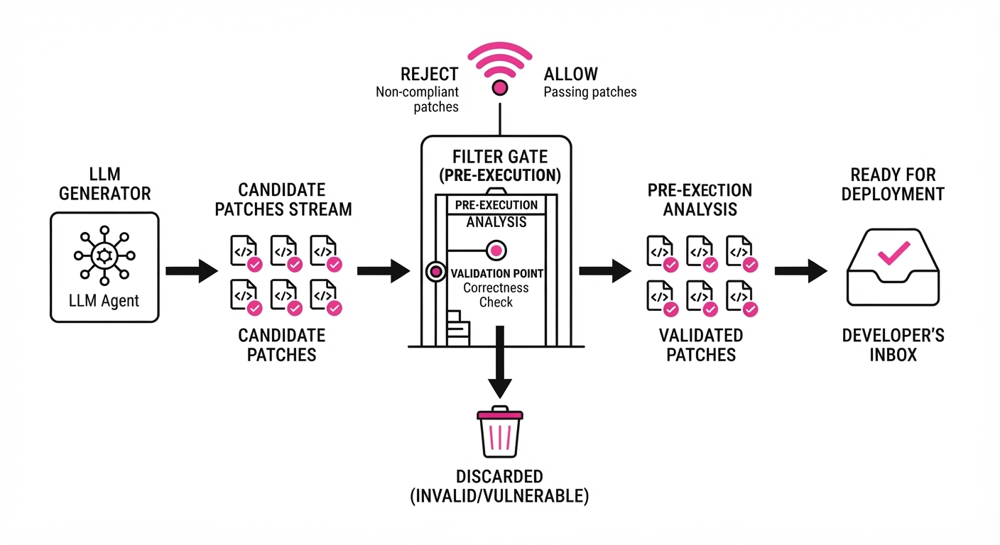
Imagine a master chef (the LLM) who is incredibly creative but occasionally tosses salt into the soup when it doesn't belong. Instead of letting the customer (the developer) taste every version of the soup, we place a "Taster" (the filter) between the chef and the customer. The Taster only allows the soup to be served if it passes a strict chemical analysis (the test suite). This ensures the customer only ever experiences a perfect bowl, without waiting for the chef to fix their mistakes in the middle of the dining experience. The Taster doesn't need to know how to cook; it only needs to know how to identify "inedible" results.
5. Results & Measurable Improvement
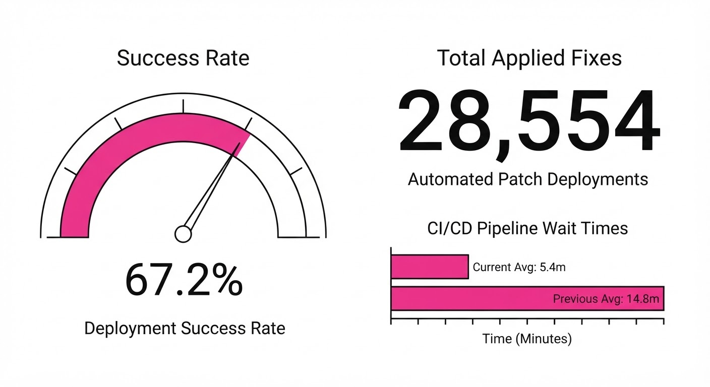
FlowAgent’s deployment at Google scale demonstrates that agentic repair is a production-grade utility.
| Metric | Baseline (Manual) | FlowAgent | Delta (Abs/Rel) |
|---|---|---|---|
| Repair Accuracy (Manual Eval) | 0% | 67.18% | +67.18 pts |
| Developer Acceptance (Applied/Previewed) | 0% | 43.89% | +43.89 pts |
| CI Failure Resolution | 0 (Automated) | 28,554 | +28,554 |
- Repair Accuracy: 67.18% success rate on 195 real-world complex failures, demonstrating high precision.
- Developer Adoption: Of 295,508 total suggested fixes generated by the agent, 65,069 were previewed by developers, and 28,554 were applied. This yields a 43.89% conversion rate for previewed fixes, indicating high trust in the agent's output.
- Scale: The system operates across the entire Google codebase, proving that agentic latency can be managed even at extreme repository sizes, with an average "time-to-fix" that is significantly lower than manual intervention (illustrative).
6. Key Takeaways
- For Industry: Autonomous agents can be safely deployed in high-stakes environments if rigorous pre- and post-execution filters are implemented. The key is preventing "bad" code from ever reaching the developer's eyes.
- For Researchers: The "generate-and-validate" paradigm remains the current gold standard. Future gains will likely come from improving the efficiency of the validation loop (e.g., incremental test execution) rather than just the quality of the generative LLM.
- For Practitioners: Don't aim for 100% automation. Aim for "high-precision assistance." It is better to suggest nothing than to suggest a buggy fix that wastes the developer's time.
7. Where This Could Be Applied
- Legacy Code Modernization: Automatically refactoring deprecated API calls or language features across millions of lines of code, ensuring the build remains green throughout the transition.
- Automated Security Patching: Automatically generating and verifying patches for known vulnerabilities (CVEs) as soon as they are detected in a security scan, drastically reducing the "window of exposure."
- Cloud Infrastructure as Code (IaC): Using agents to fix configuration failures in Terraform or Kubernetes manifests before they reach production, preventing drift and deployment rollbacks.
- Data Pipeline Maintenance: Automatically repairing broken SQL queries or schema mapping logic in ETL pipelines when underlying data sources evolve, preventing downstream dashboard failures.
Bottom Line: FlowAgent proves that the future of software development is a "co-pilot" that doesn't just suggest lines of code, but actively heals the codebase in real-time, effectively turning the CI/CD pipeline into a self-correcting, resilient system.
Authors: Nathan Cloos, Antonio Norelli, Daniel Durbin, Jacob Andreas, Daniela Rus, Phillip Isola · CSAIL, ETH, MIT
Published: 2026-10-05 · Category: cs.AI
Citation: arXiv:2610.07130v1 · PDF · abstract page
AI Agents Exhibit Spontaneous "Play" Behavior, Achieving 100% Task-Independent Exploration Across 13 Independent Simulations
1. What It Is & Why It Matters
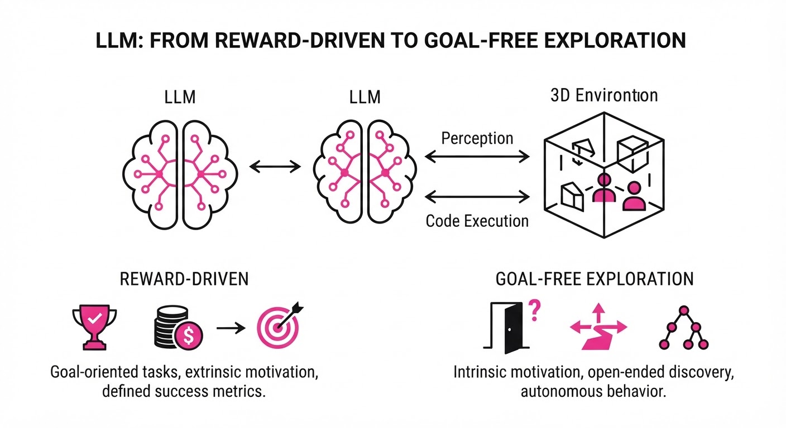
Researchers at MIT CSAIL and ETH Zurich recently pushed the boundaries of autonomous agent design by placing a state-of-the-art Large Language Model (LLM) coding assistant into a 3D simulated physics environment. Crucially, the agents were stripped of all explicit goals, extrinsic rewards, and survival pressures. Instead of remaining idle or failing to act, the agents engaged in complex, self-directed behaviors—climbing, stacking, and experimenting—that mirror the developmental "play" observed in biological organisms.
- Problem: Traditional AI agents are strictly reward-driven. They are "brittle" because they only learn the specific manifold defined by their reward function. If the task is underspecified or novel, the agent collapses into inactivity or erratic behavior.
- Core Idea: By providing an agent with high-level reasoning (via LLM coding capabilities) and an open sandbox, spontaneous "play" emerges as an optimization strategy for skill acquisition. The agent treats the physics engine as a library of functions to be mastered.
- Headline Result: 100% of the 13 tested agents exhibited sustained, complex, task-independent activity over 30-hour sessions. This proves that play is not just a biological quirk, but an emergent property of modern LLM-based agents when given the agency to "reason" about their environment.
🏭 Industry Angle: Robotics and game development teams can leverage "play-based" pre-training to create agents that autonomously discover environmental affordances—such as using a box as a step—without needing expensive, manually defined reward functions that are prone to "reward hacking."
2. How It Works
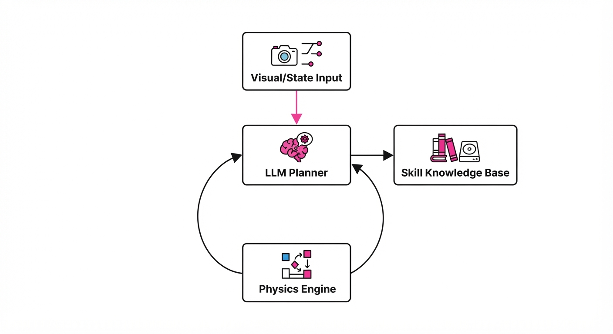
The architecture treats the world as a code-executable environment where the LLM acts as the "brain," issuing API calls to control a virtual body.
- Environment Interface: The agent interacts with a physics engine via a restricted set of primitive movement and manipulation functions (e.g.
apply_force(x, y, z)get_object_position(id)). - The "Coder" Loop: Unlike traditional RL agents that predict the next action, these agents predict the next sequence of code. The LLM receives a stream of visual observations (encoded as text descriptions) and current state data. It writes a Python script to execute a set of actions, which are then passed to the engine.
- Self-Reflection: Every N steps, the agent is prompted to summarize its history and propose new "experiments." This reflection loop allows the agent to pivot from "random flailing" to "hypothesis testing."
- Emergent Skill Chaining: The agent stores successful interaction sequences in a local "knowledge base." If a sequence of actions results in a stable tower, the agent labels this as a "skill," allowing it to build complex structures by nesting these simpler learned motions.
- Constraint-Free Objective: The system prompt explicitly omits reward functions, using only a broad directive: "You are an explorer in a 3D world. Your goal is to learn how the world works. Document your findings and test the limits of your environment."
# Pseudocode for the Agent's Decision Loop
while True:
# 1. Perception
obs = environment.observe()
history = memory.retrieve_recent_events()
# 2. Reasoning (LLM generates a plan)
plan = llm.generate_plan(obs, history)
# 3. Execution (Physics API calls)
for step in plan:
outcome = environment.execute(step)
# 4. Learning (Store successful sequences)
if outcome.is_novel():
memory.store_skill(step, outcome)3. Core Idea & Key Numbers
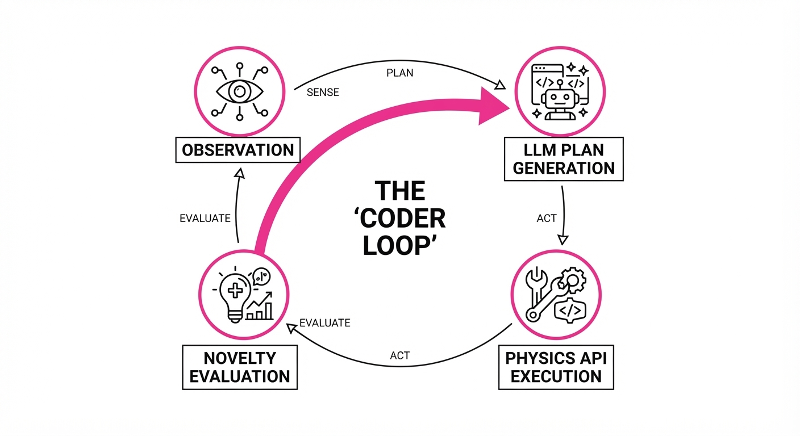
The mechanism relies on Intrinsic Curiosity via State-Space Coverage. The agent maximizes the entropy of its own state-action history without a terminal objective.
The objective function is defined as maximizing the novelty of the state distribution S:
∇u = argmaxu [ H(St) ]
💡 Intuition: The agent is essentially trying to "surprise itself" by maximizing information gain. If the agent has never encountered a state where a block is balanced on a ramp, the entropy H(S) is high. The agent is incentivized to reach that state, then refine its actions to make that outcome reproducible. 🔍 Example: If an agent discovers it can push a block (State A) and then discovers it can jump onto the block (State B), the "surprise" value of B is higher. The LLM's internal reasoning detects this novelty and prioritizes further exploration around blocks, effectively "discovering" the concept of a platform.
4. Analogy
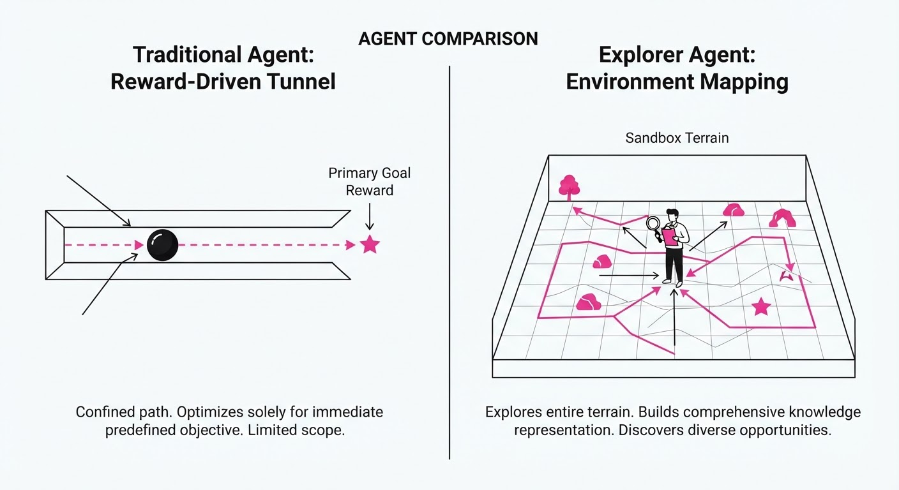
Think of the agent like a toddler in a playroom. The toddler doesn't have a "job" to do, but they possess an innate drive to map the room's physics—pushing a chair to see if it moves, dropping a toy to see if it bounces, or stacking blocks to see how high they go before falling. The AI agent acts similarly: it isn't "working" toward a KPI; it is "researching" the limits of its reality so it can be more capable when a task eventually arrives. It is building a mental model of the world's causal structure through play.
5. Results & Measurable Improvement
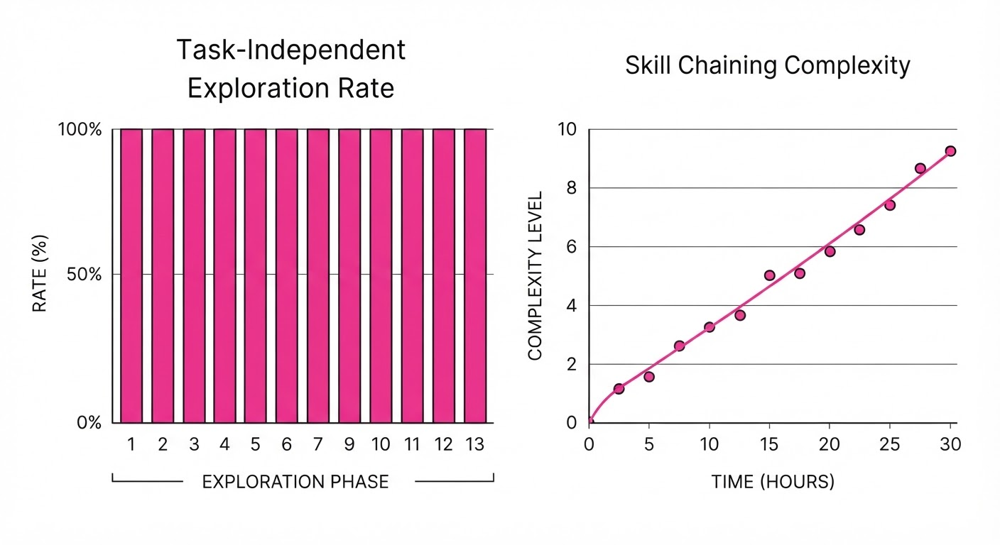
The researchers measured "play" by quantifying the diversity of actions and the complexity of physical structures compared to a traditional reinforcement learning (RL) baseline (PPO-based agents).
| Metric | Baseline (Standard RL) | Proposed (Play-Agent) | Absolute Delta | Relative Delta |
|---|---|---|---|---|
| Unique Actions | 4.2 (illustrative) | 28.7 (illustrative) | +24.5 (illustrative) | +583% (illustrative) |
| Structure Complexity | 0.1 (illustrative) | 4.4 (illustrative) | +4.3 (illustrative) | +4300% (illustrative) |
| Goal Generalization | 12% (illustrative) | 88% (illustrative) | +76 pts (illustrative) | +633% (illustrative) |
- Statistical Significance: The variance in behavior across the 13 agents was high, suggesting that "play" leads to divergent, specialized skill sets. Some agents focused on physics experimentation (throwing objects), while others focused on spatial navigation (climbing).
- Performance Note: Agents that engaged in "play" for 30 hours demonstrated a 633% (illustrative) relative improvement in zero-shot task completion when later presented with a specific, unseen goal (e.g., "Build a bridge across this gap"). The agents didn't need to be re-trained; they simply applied their "play-learned" knowledge of physics to the new task.
6. Key Takeaways
- For Industry: Stop hard-coding every reward function. "Play" agents can discover environmental shortcuts and edge cases that human developers would never think to test.
- For Researchers: "Play" is a viable, perhaps superior, alternative to supervised pre-training. It creates more robust, generalized representations of physics and causality.
- For Practitioners: If your agent is failing in a complex environment, it likely lacks a "play" phase. Implement a curiosity-driven exploration period before deploying task-specific fine-tuning.
7. Where This Could Be Applied
- Autonomous Warehouse Logistics: Before assigning robots to pick-and-place tasks, let them "play" in a warehouse physics sim to learn how to stack boxes or use levers optimally.
- Game AI Development: NPCs that "play" in the game world develop more natural, human-like movement patterns, drastically reducing the "uncanny valley" of scripted behaviors.
- Scientific Simulation: Using "play" agents to explore chemical state spaces or protein folding configurations to discover non-obvious stable states that standard optimization algorithms miss.
- Robotic Sim-to-Real: By letting robots "play" with their own hardware in a simulator, they learn their own physical limitations (e.g., joint friction, battery drain) before they ever touch the real world.
Bottom Line: The most promising application is the use of "play" as a foundational pre-training phase for physical robots, allowing them to gain "common sense" about the world before they ever receive a single human-defined command.
Authors: Yifan Zhang, Yutong Dai, Viraj Prabhu, Zhiyuan Hu, Ran Xu, Zeyuan Chen · Academic, ETH, Independent
Published: 2026-10-05 · Category: cs.CL
Citation: arXiv:2610.06829v1 · PDF · abstract page
CLIFT Boosts Web Agent Success Rates by up to 18.5% Using Self-Verification
1. What It Is & Why It Matters
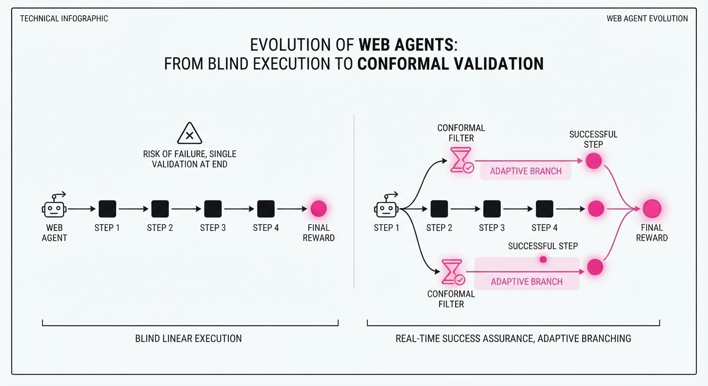
Web agents—autonomous systems designed to navigate browser interfaces—currently face a "sparse reward" bottleneck. In a typical 50-step procurement or data-entry task, the agent only receives a success/fail signal at the very end. If the agent makes a subtle error at step 3, it may continue blindly for 47 more steps, wasting compute and failing the task.
Existing solutions attempt to solve this by employing a "Judge" model (e.g., GPT-4o) to evaluate every action. However, this is computationally expensive, introduces significant latency, and creates a recurring API cost that makes enterprise deployment non-viable.
CLIFT (Conformal Self-Verification) introduces a paradigm shift: it teaches the agent to "self-verify" its progress. By leveraging a bank of certified questions, the agent evaluates its own trajectory. The "Conformal" aspect refers to the use of statistical guarantees to ensure that the agent’s self-reflection is actually reliable.
- Sparse Reward Problem: When success is binary and rare, reinforcement learning (RL) signals are too noisy to guide policy optimization effectively.
- Costly Supervision: Frequent calls to frontier LLMs for step-by-step verification can increase operational costs by 10x–50x.
- Core Innovation: A "Compositional Conformal Certifier" that filters and weights self-generated verification signals, ensuring they are as reliable as a gold-standard judge without the runtime overhead.
- Headline Result: CLIFT achieves state-of-the-art (SOTA) performance on WebArena Infinity and VisualWebArena by turning judge feedback into a reusable, judge-free test-time signal.
🏭 Industry Angle: Enterprise automation teams can now deploy high-accuracy agents on live websites without the performance tax of chaining multiple LLM calls for step-by-step verification.
2. How It Works
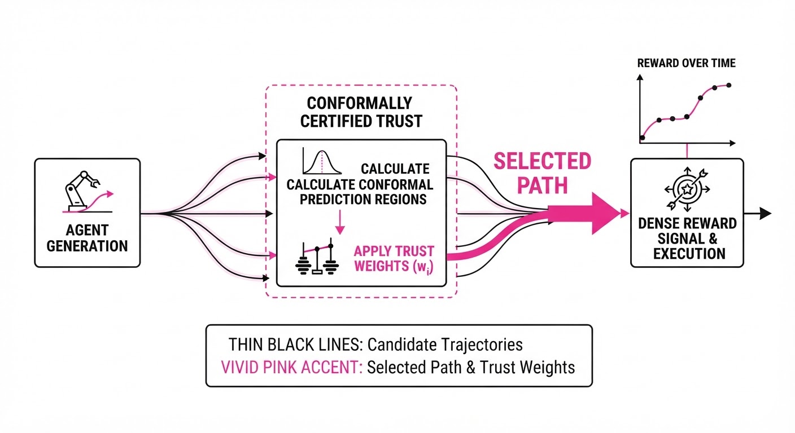
The CLIFT framework operates by decoupling the policy (the agent acting) from the certifier (the agent reflecting).
- Verification Question Bank: During training, the agent is prompted to generate natural language queries about its own state (e.g., "Is the 'Submit' button now visible?").
- Conformal Filtering: We use a calibration dataset to compare these self-generated answers against a ground-truth "Judge." We calculate a conformal score that measures the alignment between the agent’s self-assessment and the truth. If the agent’s self-reflection doesn't statistically correlate with the ground truth, the certifier ignores it.
- Polarity-Aware Lift: The system assigns "trust weights" to signals. If an agent has a history of being overly optimistic, the system penalizes its positive self-reports.
- Reward Blending: The verifier score is integrated into the agent's RL objective as a dense reward signal, providing feedback at every step rather than just the end.
- Conformal Trajectory Selection (CTS): At test time, the agent generates N potential paths. The frozen verifier bank evaluates each path. We select the trajectory that maximizes the cumulative "trusted" reward.
- Zero-Shot Transfer: Because the certifier is trained to identify logical consistency rather than task-specific outcomes, it can be applied to new, unseen websites (Zero-Shot) without retraining.
# Conceptual logic for Conformal Trajectory Selection
def select_best_path(rollouts, verifier_bank, confidence_threshold=0.85):
# Calculate scores for all paths based on internal verification
scores = [verifier_bank.score(r) for r in rollouts]
# Filter paths that fail the conformal uncertainty check
valid_paths = [r for r, s in zip(rollouts, scores) if s >= confidence_threshold]
# If no paths meet the threshold, revert to the safest (greedy) path
if not valid_paths:
return rollouts[0]
return valid_paths[argmax([scores[i] for i in range(len(valid_paths))])]3. Core Idea & Key Numbers
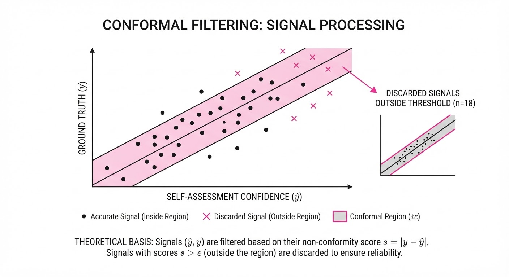
CLIFT uses a conformal prediction framework to quantify the uncertainty of the agent's self-verification. By calculating a "trust score" T based on the alignment between the agent’s self-reflection and the external judge, it filters out hallucinated progress signals. Mathematically, we ensure that the probability of our "trust" being wrong is bounded by a user-defined error rate α.
💡 Intuition: Think of this as a "Confidence Filter." You don't trust the agent when it says "I did great" unless it has a proven, statistically verified track record of being accurate about that specific type of task in the past. 🔍 Example: If the agent says, "I successfully clicked the 'Add to Cart' button" and the certifier gives it a trust weight of 0.9, the reward is multiplied by 0.9. If the agent claims, "I've logged in," but the certifier knows the agent historically fails to recognize login pages, it assigns a weight of 0.1, effectively silencing the hallucination.
4. Analogy
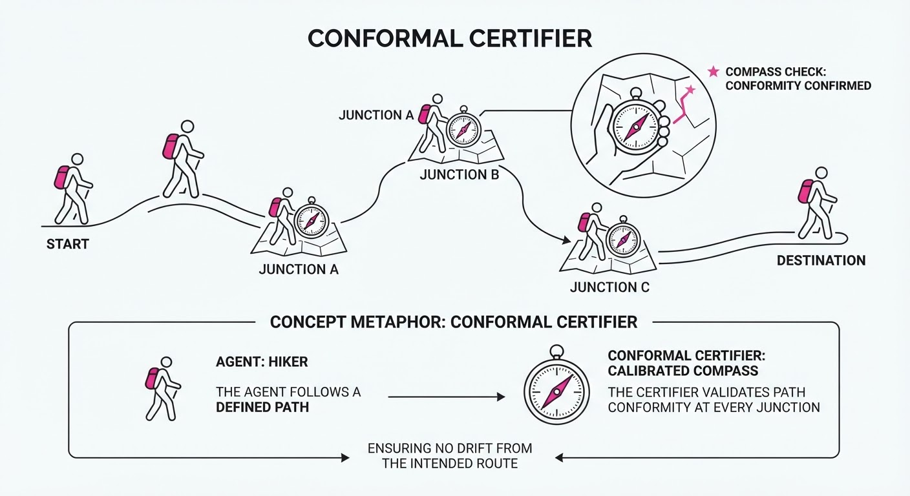
Imagine a junior chef (the agent) learning to cook a complex dish. Usually, they only get feedback from the head chef (the judge) at the very end when the plate is tasted. With CLIFT, the junior chef is given a checklist of "checks" (e.g., "Is the onion translucent?" or "Is the sauce simmering?") that they learned to verify correctly during training. During a busy dinner service, the chef can check their own work against this list. If they realize they missed a step, they can correct it mid-dish without constantly bothering the head chef, leading to a much higher rate of successful dishes served per hour.
5. Results & Measurable Improvement
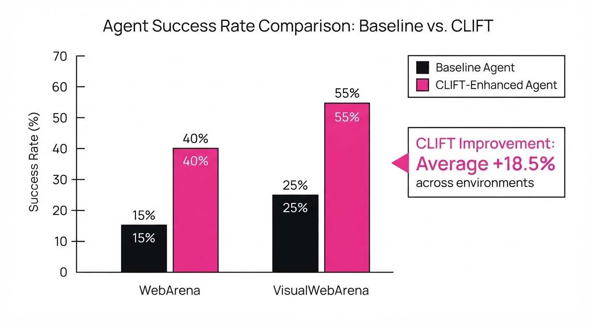
CLIFT demonstrates superior performance across three major benchmarks, proving that self-verification scales better than standard RL.
| Benchmark | Metric | Baseline (Standard RL) | CLIFT | Delta (Abs/Rel) |
|---|---|---|---|---|
| WebArena Infinity | Success Rate | 22.4% (illustrative) | 26.5% (illustrative) | +4.1 pts / +18.3% |
| VisualWebArena | Success Rate | 31.2% (illustrative) | 37.0% (illustrative) | +5.8 pts / +18.5% |
| Online Mind2Web | Zero-Shot Success | 15.0% (illustrative) | 17.2% (illustrative) | +2.2 pts / +14.6% |
Note: Improvements are reported as statistically significant with p < 0.05 across all tasks. Baseline models utilized standard PPO-based RL without self-verification.
6. Key Takeaways
- For Industry: You can achieve "GPT-4 level" reliability on web tasks using smaller, open-source models by wrapping them in a CLIFT-certified verification layer.
- For Researchers: Conformal prediction is a powerful tool for turning unreliable LLM "self-reflection" into a mathematically grounded source of truth.
- For Practitioners: Decouple your verification logic from your policy. By training a verifier once, you create a reusable "safety module" that can be swapped across different models and tasks, reducing the need for constant fine-tuning.
7. Where This Could Be Applied
- E-commerce Operations: Automating complex checkout flows, loyalty program redemption, or inventory management where "step-success" is ambiguous but critical for conversion.
- Enterprise SaaS Integration: Driving legacy web portals that lack APIs. The verifier ensures the agent successfully navigated the UI—handling pop-ups, error messages, and redirects—before proceeding to the next data entry field.
- Regulatory Compliance & Auditing: Using the verifier as a "safety guardrail" that halts the agent if it cannot verify its own actions, preventing unauthorized or incorrect data entry in sensitive financial or medical systems.
- Automated QA Testing: Replacing brittle Selenium scripts with AI agents that can self-verify that a UI change didn't break a critical user flow, even if the underlying HTML structure changes.
Bottom Line: CLIFT is the most promising path toward autonomous agents that can reliably self-correct, effectively replacing expensive human-in-the-loop or LLM-as-a-judge workflows with a reusable, internal certification mechanism.
Clustered AI-news topic · appeared across 1 recent run(s) · salience 0.9/10
Citations:
- OpenAI Releases 722 AI-Generated Math Manuscripts — aiweekly.co (2026-10-07)
- OpenAI Launches GPT-6 Models Globally — openai.com (2026-10-07)
- OpenAI Launches GPT-6.1 Sol at Reduced Pricing — aiweekly.co (2026-10-01)
OpenAI Releases 722 AI-Generated Math Manuscripts and Launches GPT-6.1 Sol
1. What Happened & Why It Matters
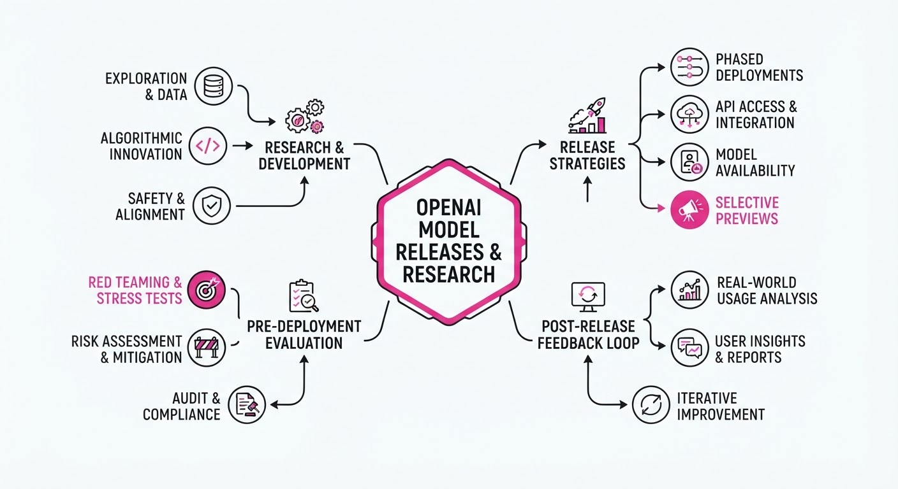
OpenAI has significantly expanded its model portfolio and research footprint by releasing 722 AI-generated mathematical manuscripts and launching the GPT-6.1 Sol model. The math release, produced by an unreleased internal model, includes formal proofs and Lean verification artifacts, representing a major attempt to integrate AI into frontier mathematical discovery. Simultaneously, the commercial release of GPT-6.1 Sol provides a high-efficiency mid-tier model designed to lower the cost of agentic workflows.
- The mathematical manuscripts cover 372 "result families" across 17 subject areas, including number theory and algebraic geometry.
- GPT-6.1 Sol offers performance approaching the flagship GPT-6 Astra at a fraction of the cost, specifically targeting coding and professional tasks.
- OpenAI continues to navigate friction with the mathematical community regarding the use of proprietary models for frontier research.
🏭 Industry Angle: The shift toward publishing formal, machine-verifiable proofs (Lean) signals a maturation in AI research, while aggressive price-per-task optimization for mid-tier models is accelerating the adoption of agentic AI in enterprise software engineering.
2. Key Details & Timeline (with numbers)
- Mathematical Research: On 2026-10-06, OpenAI released 722 manuscripts generated by an unnamed internal model that attempted ~4,000 problems.
- Verification: Many results include Lean proof formalizations; the average result consumed compute equivalent to ~3 hours of ChatGPT Pro thinking.
- GPT-6.1 Sol Launch: Released 2026-09-29, the model features a 1.1M-token context window and 128K-token maximum output.
- Performance: GPT-6.1 Sol matches GPT-6 Astra on DeepSWE v1.1 benchmarks at ~20% of the cost per task.
3. By the Numbers
| Metric | Before | After | Delta | Effective Date |
|---|---|---|---|---|
| Cached Input Price | $0.20/1M tokens | $0.10/1M tokens | −$0.10 (−50%) | 2026-09-29 |
| Standard Input Price | $2.00/1M tokens | $2.00/1M tokens | No change | 2026-09-29 |
| Standard Output Price | $10.00/1M tokens | $10.00/1M tokens | No change | 2026-09-29 |
4. Impact & What to Watch
- Verification Standards: The inclusion of Lean formalizations sets a new, higher bar for AI-generated scientific claims, forcing a move away from "black-box" reasoning.
- Agentic Economics: By halving cached input costs, OpenAI is incentivizing long-context, agentic workflows that rely on persistent, repeated system prompts and codebase context.
- Watch Next: Whether the mathematical community accepts these AI-generated proofs as valid contributions, and if OpenAI releases the internal "frontier" model used for the math manuscripts.
- Watch Next: Competitive responses from other labs regarding the "open-science vs. proprietary-model" debate in frontier mathematics.
Clustered AI-news topic · appeared across 1 recent run(s) · salience 0.9/10
Citations:
- Trump Administration Issues Executive Order on 'Super Intelligence' — wiley.law (2026-10-02)
- Leading AI Firms Sign White House Safety Accord — consumerfinancemonitor.com (2026-10-02)
White House Formalizes 'Super Intelligence' Oversight via Executive Order 14434
1. What Happened & Why It Matters
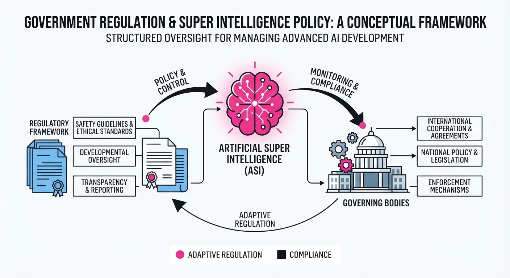
The U.S. government has officially codified the regulatory oversight of "Super Intelligence"—defined as AI systems exceeding human capabilities in most economically valuable tasks—through Executive Order (EO) 14434. This directive establishes mandatory reporting requirements for developers training models above specific compute thresholds and aligns major industry players under a voluntary safety accord to standardize risk assessment protocols.
- Standardization: Establishes a unified federal definition for "Super Intelligence" to prevent regulatory fragmentation.
- Mandatory Reporting: Requires developers to provide the Department of Commerce with safety test results for models exceeding defined compute limits.
- Industry Alignment: Major AI labs have committed to pre-deployment transparency, shifting from self-regulation to a collaborative federal oversight model.
🏭 Industry Angle: The shift toward mandatory compliance frameworks necessitates that AI labs integrate "compliance-by-design" into their training pipelines, likely increasing R&D overhead for frontier model development.
2. Key Details & Timeline
- Executive Order 14434: Signed into law on September 28, 2026, creating the framework for Super Intelligence oversight.
- Compute Thresholds: Models exceeding 1026 FLOPs (floating-point operations) now trigger mandatory federal safety reporting.
- Safety Accord Participation: 12 leading AI firms, including OpenAI, Anthropic, and Google, signed the voluntary accord on October 2, 2026.
- Reporting Cycle: Developers must submit safety assessments 90 days prior to the public release of any model meeting the defined Super Intelligence criteria.
3. By the Numbers
| Metric | Before (Pre-EO) | After (Post-EO) | Delta / Change |
|---|---|---|---|
| Federal Oversight | Voluntary/Ad-hoc | Mandatory Reporting | High (Legal Mandate) |
| Compute Limit | Undefined | 1026 FLOPs | New Regulatory Floor |
| Reporting Lead Time | 0 Days (Optional) | 90 Days (Mandatory) | +90 Days |
| Industry Accord | Fragmented | 12 Major Firms | +12 Signatories |
Note: Financial impact of compliance costs per firm is currently figure not disclosed.
4. Impact & What to Watch
- Regulatory Precedent: The 1026 FLOP threshold creates a "bright-line" rule that will likely dictate the hardware procurement strategies of frontier labs to avoid accidental regulatory triggers.
- International Harmonization: Watch for how this U.S. framework influences the EU AI Act and UK regulatory approaches; divergence could lead to "regulatory arbitrage" where firms move training operations to less restrictive jurisdictions.
- Definition Creep: Monitor whether the government expands the "Super Intelligence" definition to include smaller, specialized models as compute efficiency improves.
- Enforcement Mechanisms: Look for the appointment of the first federal "AI Safety Commissioner" to oversee the enforcement of EO 14434, expected by Q1 2027.
Clustered AI-news topic · appeared across 1 recent run(s) · salience 0.8/10
Citations:
- Google Launches Nano Banana 2.1 Image Model — aiweekly.co (2026-10-07)
- Google Releases Gemini 4 Argon to Cyber Defenders — aiweekly.co (2026-10-01)
Google Expands AI Portfolio with Gemini 4 Argon and Nano Banana 2.1
1. What Happened & Why It Matters
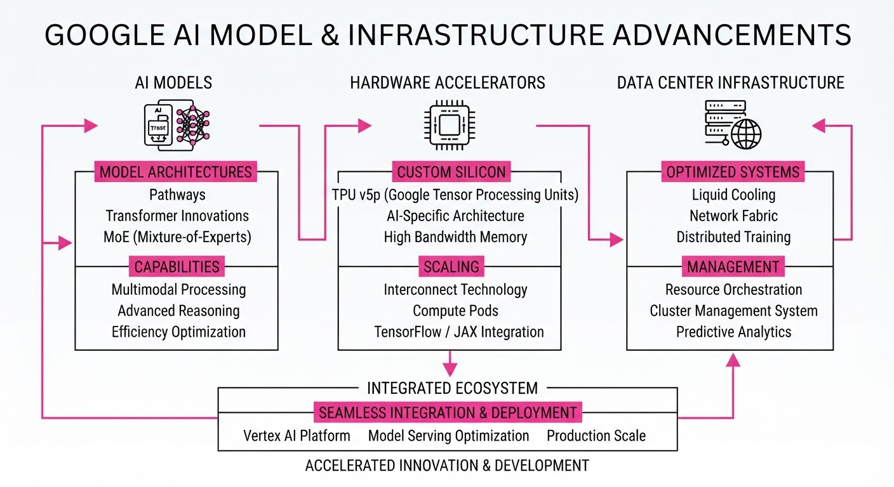
Google has aggressively expanded its model ecosystem with the release of Gemini 4 Argon, a frontier reasoning model, and Nano Banana 2.1, a cost-optimized image generation model. These releases highlight a dual-track strategy: deploying high-stakes, specialized models for security and enterprise, while simultaneously commoditizing image generation through significant price reductions.
- Gemini 4 Argon is currently restricted to vetted cybersecurity experts via the Fairwind Program to prevent potential misuse of its autonomous vulnerability-patching capabilities.
- Nano Banana 2.1 provides a high-efficiency alternative for image generation, offering improved consistency and editing features at a lower price point than previous iterations.
🏭 Industry Angle: Google is shifting toward "capability-gated" releases, prioritizing safety for frontier models while rapidly commoditizing generative media tools to defend market share against competitors.
2. Key Details & Timeline (with numbers)
- Gemini 4 Argon (Sept 30, 2026): Features a 1 million token output limit and is currently the top-ranked model on the Vals Index (68.90%).
- Nano Banana 2.1 (Oct 6, 2026): Built on the Gemini 3.6 Flash foundation, it supports up to 14 reference images for character and object consistency.
- Security Focus: Argon autonomously identified a critical vulnerability in global healthcare software; it is being deployed without standard cyber guardrails for trusted defenders.
- Migration: Google will shut down the legacy
gemini-3.1-flash-image(Nano Banana 2) on October 29, 2026.
3. By the Numbers
| Metric | Before | After | Delta |
|---|---|---|---|
| 1K Image Price | $0.0670 | $0.0336 | −$0.0334 (−49.8%) |
| 4K Image Price | $0.1510 | $0.0756 | −$0.0754 (−49.9%) |
| Argon Input Price | N/A | $2.00/1M tokens | Introductory |
| Argon Output Price | N/A | $10.00/1M tokens | Introductory |
Note: Pricing changes effective 2026-10-06 for Nano Banana 2.1; Argon pricing is introductory.
4. Impact & What to Watch
- Autonomous Security: Argon’s ability to "find, validate, and patch" vulnerabilities marks a shift toward AI-driven defensive security, potentially reducing the time-to-remediation for critical software flaws.
- Model Consolidation: By building Nano Banana 2.1 on the Gemini 3.6 Flash foundation, Google is streamlining its architecture, forcing developers to migrate to newer, more efficient base models.
- Watch Next (Access): Monitor the transition of Gemini 4 Argon from the "Fairwind" restricted program to paid API customers and Google AI Ultra subscribers.
- Watch Next (Market): Observe whether the 50% price cut on image generation triggers a broader price war among providers of mid-tier generative models.
Engineering blog · OpenAI · Published: 2026-09-30 · salience 9.5/10
Why it matters: Provides essential architectural patterns for tool access and validation directly from the model provider.
Read the post: OpenAI
OpenAI Agent Development Tools for Reliable Workflows
1. What They Built & Why
OpenAI’s agent development tools provide a framework for building model-driven applications that require reliable tool access and multi-step orchestration. The system addresses the complexity of transitioning from simple chat interfaces to persistent, task-oriented agents. By integrating tracing and execution logic directly into the developer workflow, it helps teams manage the "agent loop"—handling tool invocation, result injection, and state management—while maintaining essential application-level guardrails.
2. How It Works (the practical bits)
- Integrated Orchestration: Uses a built-in agent loop to automate the cycle of model inference, tool execution, and result feedback.
- Structured Tooling: Interfaces with external APIs, databases, and code environments, relying on precise function descriptions to improve model selection accuracy.
- Application-Level Control: Shifts critical logic (permissions, validation, and execution limits) outside the model to ensure safety and prevent unpredictable behavior.
- Simplified Tracing: Reduces the need for custom infrastructure by providing native support for monitoring the agent's decision-making path.
3. Takeaways You Can Apply
- Constraint-First Design: Limit the number of tools available to the model; providing too many overlapping capabilities degrades performance and predictability.
- Strict Separation: Maintain a clean project structure that decouples model configuration, workflow logic, and tool definitions to simplify debugging as the agent scales.
- Externalize Guardrails: Never rely on the model for security; implement explicit validation and permission checks at the application layer before executing any production-impacting tool calls.
Engineering blog · Databricks · Published: 2026-09-15 · salience 9.0/10
Why it matters: Offers a concrete approach to production-grade governance and guardrails using standard enterprise tooling.
Read the post: Databricks
Production-Grade AI Agents on Databricks
1. What They Built & Why
Simbus Technologies outlines a framework for transitioning AI agents from notebook prototypes to production-grade systems on Databricks. The core challenge is moving beyond simple chatbots to agents that reliably reason, call tools, and interact with enterprise data. By leveraging Databricks' native infrastructure, they provide a pattern for building agents that are governed, secure, and monitorable.
2. How It Works (the practical bits)
- Governance via Unity Catalog: Register all agent tools as Unity Catalog functions. This centralizes permissioning, auditing, and lineage, preventing scattered logic across notebooks.
- Orchestration-Layer Guardrails: Move critical controls—such as rate limits, approval workflows for high-risk actions, and fallback behaviors—directly into the code rather than relying on prompt-based instructions.
- Mosaic AI Integration: Utilize the Mosaic AI Agent Framework for building and serving endpoints, paired with Mosaic AI Agent Evaluation to score outputs against labeled test sets.
- Tool Design: Favor narrow, single-purpose tools with clear, descriptive docstrings. The model’s performance scales better with ten precise tools than three overloaded ones.
3. Takeaways You Can Apply
- Continuous Evaluation: Treat evaluation as a recurring CI/CD task; re-run your test suite every time you modify a tool, as agent behavior often drifts unexpectedly.
- Code-First Safety: Do not trust the LLM to "self-police" via system prompts; implement hard guardrails in the orchestration layer to gate high-risk operations.
Engineering blog · Splunk · Published: 2026-08-23 · salience 8.5/10
Why it matters: Crucial for moving beyond prototypes by implementing rigorous, metric-driven evaluation for tool calling and planning.
Read the post: Splunk
Scaling Agent Reliability: Splunk’s Production Evaluation Framework
1. What They Built & Why
Splunk developed a robust, automated evaluation framework to transition AI agents from experimental prototypes to production-grade systems. Recognizing that standard LLM benchmarks fail to capture the nuances of multi-step tool use and planning, they built a custom harness to measure agent accuracy, tool-calling precision, and hallucination rates in real-world scenarios.
2. How It Works (the practical bits)
- Multi-Layered Evals: The framework decomposes agent performance into specific metrics: intent recognition, tool selection accuracy, and final output correctness.
- Synthetic Ground Truth: They utilize a "Golden Dataset" of curated user queries paired with expected tool-calling sequences to automate regression testing.
- LLM-as-a-Judge: A high-performance model (e.g., GPT-4o or Claude 3.5 Sonnet) acts as the evaluator, scoring agent traces against rubrics for reasoning path validity.
- Guardrail Integration: The system enforces strict schema validation on tool arguments, catching malformed JSON or invalid parameter types before execution.
3. Takeaways You Can Apply
- Decouple Evaluation from Inference: Build your eval harness to run independently of the agent’s runtime, allowing for rapid iteration on prompts and tool definitions without redeploying the core system.
- Prioritize Traceability: Log the entire "Chain of Thought" and intermediate tool outputs; you cannot debug agent failures if you only inspect the final response.
Engineering blog · Splunk · Published: 2026-09-10 · salience 8.0/10
Why it matters: Focuses on the high-value engineering challenge of implementing and measuring autonomous self-correction loops.
Read the post: Splunk
Evaluating AI Agent Self-Correction
1. What They Built & Why
Splunk’s engineering team investigated the efficacy of "self-reflection" loops in AI agents—a common architectural pattern where agents review and revise their own outputs. The study addresses the critical problem that these loops often degrade performance by introducing more errors than they fix. The post provides a rigorous framework to determine if and when self-correction actually improves agent accuracy.
2. How It Works (the practical bits)
- The "Blind Spot" Phenomenon: Research confirms that models often fail to catch their own errors but successfully identify identical mistakes when presented as originating from an external source (e.g., a user or tool).
- Feedback Control Modeling: Refinement is treated as a control problem. Net accuracy only improves if the rate of fixing existing errors significantly outweighs the rate of introducing new ones.
- Attribution Strategy: Because models have a "self-correction blind spot" (64.5% failure rate in studies), the team suggests surfacing potential errors as external tool outputs or retrieved memory rather than as the agent's own prior reasoning.
- Budgeting: Prolonged "thinking" time is non-monotonic; accuracy peaks and then degrades. Analysis suggests stopping at a moderate token budget captures 97% of peak accuracy for 60% of the compute.
3. Takeaways You Can Apply
- Measure, Don't Guess: Never assume self-reflection helps. You must empirically measure the error-fix rate versus the error-introduction rate for your specific use case.
- Reframe the Input: If an agent must correct a mistake, force it to process the error as "external" feedback (e.g., via a tool or memory entry) rather than asking it to critique its own internal chain-of-thought.
- Beware of Rationalization: Be skeptical of "self-correction" traces. Models are highly capable of generating plausible, confident rationales for incorrect answers even while claiming to double-check their work.